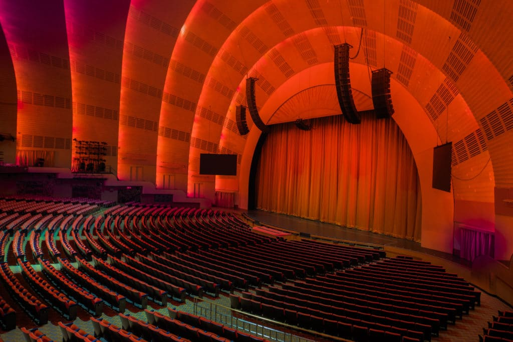

New Drops
Sets
Remixes
Production
Interviews
Newsletter
Our Favorite New York City Venues
Forest Hills Stadium

Radio City Music Hall
The Brooklyn Mirage and Avant Gardner
Beacon Theatre
The Bowery Ballroom
Brooklyn Steel
Elsewhere
Kings Theatre